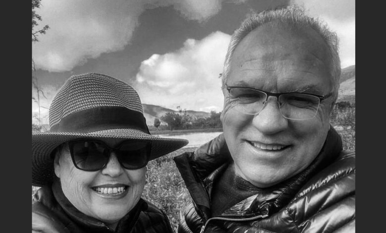
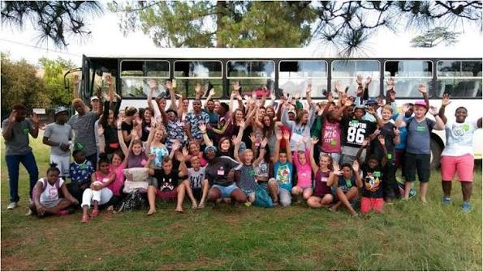

BETHANY HOUSE TRUST
Every child deserves a safe place to be Loved
Since 1998, Bethany House Trust has been that safe haven for orphaned and vulnerable children in Krugersdorp. For nearly three decades, we have opened our doors and our hearts to give children the family, love, protection and a beautiful childhood they truly deserve.
DonateWatch the Bethany House Trust story
Our Impact
Making a difference
150+
children cared for and protected
3
active care centres in Gauteng
25+
years of service

About Us
A place where children can feel safe and loved
Our journey began when Gert and Antoinette Jonker opened their own home to a child who had nowhere else to turn. What started as a simple act of love and compassion grew into a safe and caring home for children who had expreienced abandonment,making sure that no child in our care ever had to face the world alone.
Get to read our full story >>>OUR PROGRAMMES
We support famillies through our three care centres, foster care and food outreach programmes.We help meet children's basic needs while giving them a safe and caring place where they can grow,heal and have hope for a better loving future.
Discover how you can help and be part of our programmes >>>
GET INVOLVED
Join us in making a difference
Join us in making a difference in the lives of children in need.